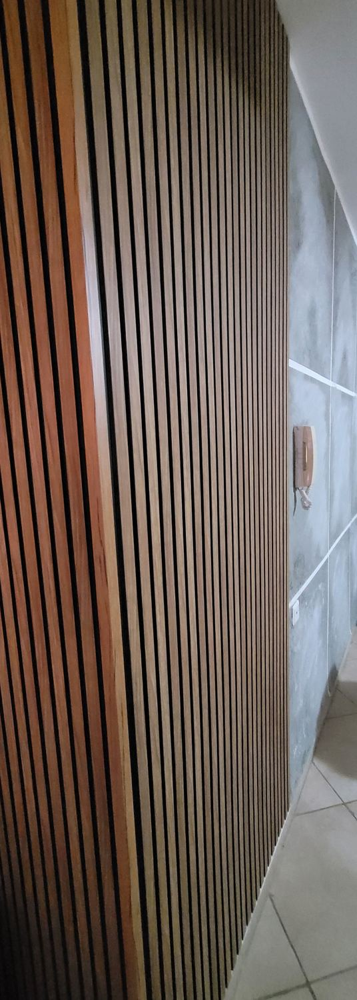
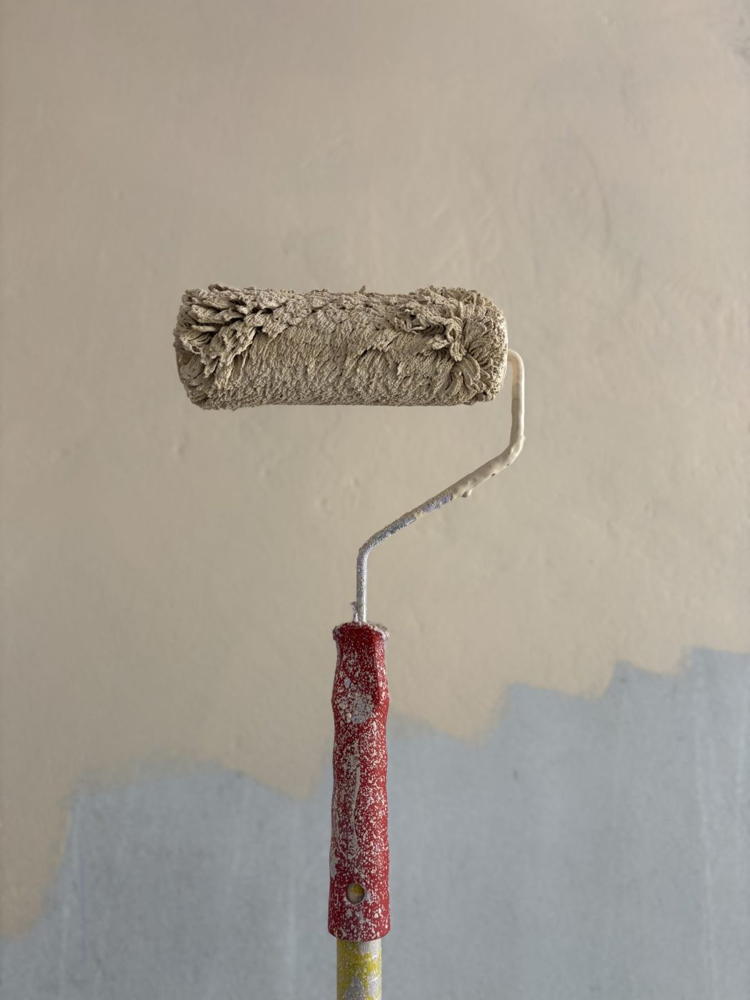
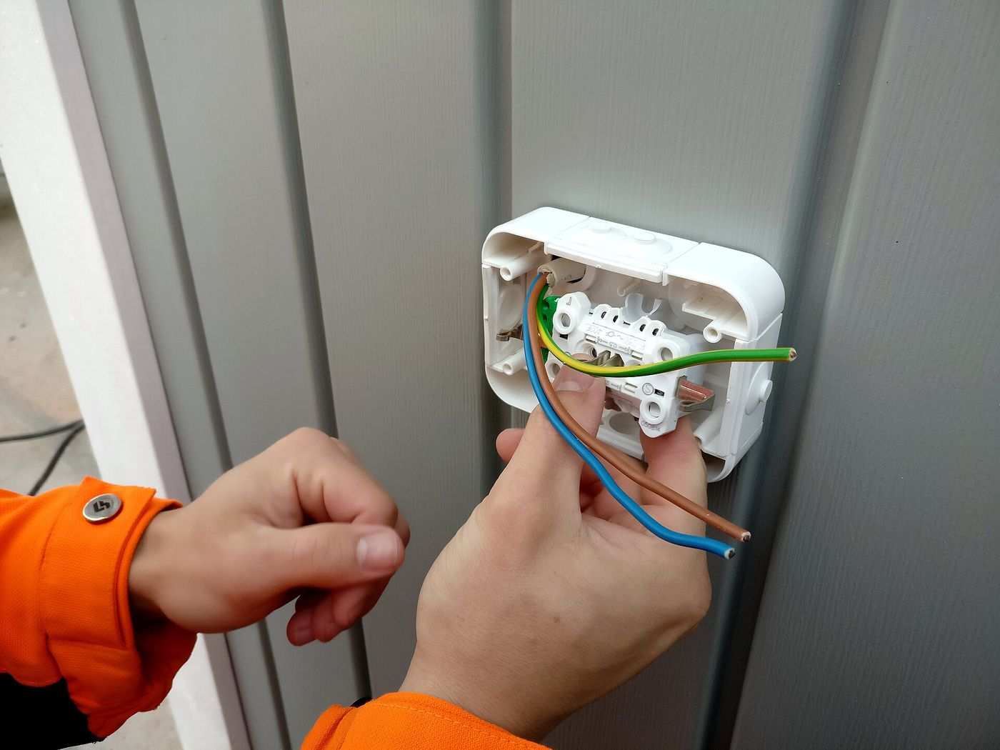
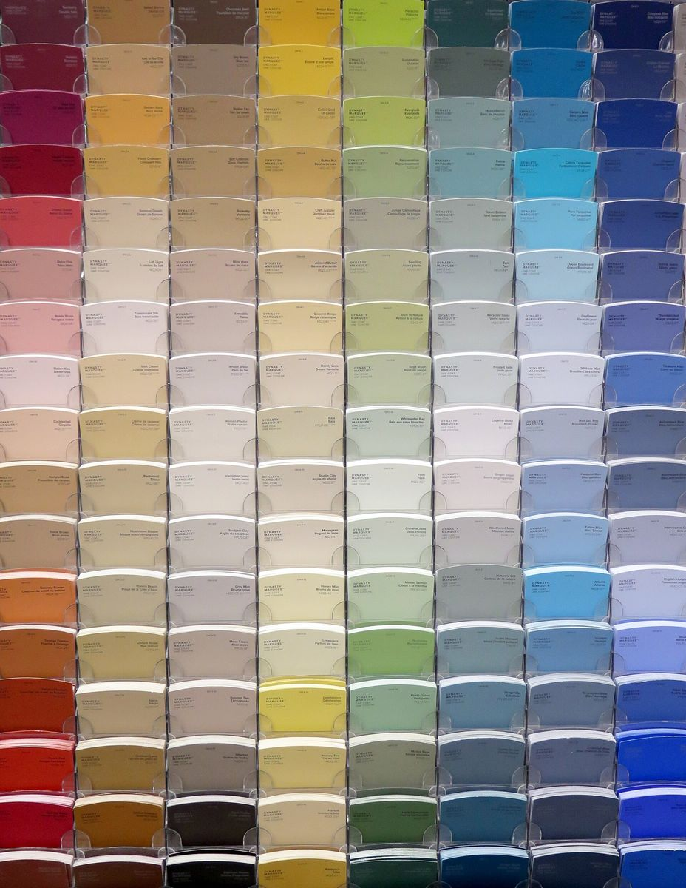
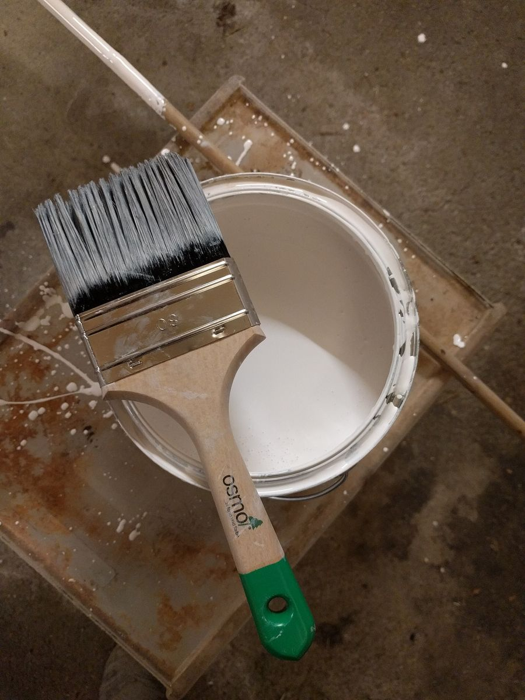

אייזיק.Isaac. צבע וחשמל, מאותן ידיים.Paint and power, one pair of hands.
אייזיק עבודות צבע וחשמל: צביעה, גימורים לקירות ועבודות חשמל בבית. מנחם בגין 12, קריית מוצקין.Isaac Painting & Electrical Works: painting, wall finishes and home electrics. 12 Menachem Begin St, Kiryat Motzkin.




שכבה אחרי שכבה.Coat after coat.
קירות שתופסים אור.Walls that catch the light.
גימור דקורטיבי וקיר עם חיפוי עץ, מתוך התמונות שהעסק העלה לגוגל.A decorative finish and a slatted wood wall, from the photos the business posted on Google.

הגוון נבחר על הקיר.The colour is chosen on the wall.
החשמל שבקיר.The power inside the wall.
חשמלאי מוסמך לעבודות חשמל בבית. העבודות מתוך האתר של אייזיק:A licensed electrician for home electrical work. The jobs, from Isaac’s own website:
מה כתבו בגוגל.What people wrote on Google.
“אמין ומקצועי”“Reliable and professional” (translated from Hebrew)
“פיקס”“Spot on” (translated from Hebrew)
שלושת האחרונים דירגו בחמישה כוכבים בלי לכתוב ביקורת.The last three gave five stars without writing a review.
הודעה לאייזיק.A message to Isaac.
- בוחרים צבע, חשמל או את שניהם.Choose paint, electrics or both.
- מסמנים מה צריך ואיפה.Tick what you need and where.
- שולחים לאייזיק בוואטסאפ.Send it to Isaac on WhatsApp.
שאלות קצרות.Short questions.
אייזיק עושה גם צבע וגם חשמל?Does Isaac do both painting and electrics?
כן, זה שם העסק: אייזיק עבודות צבע וחשמל. אפשר לבקש את שניהם באותה הודעה.Yes, it’s in the name: Isaac Painting & Electrical Works. You can ask for both in one message.
אילו עבודות חשמל?Which electrical jobs?
באתר של אייזיק מופיעות החלפת ארון חשמל, התקנת מפסק פחת, התקנת מאוורר תקרה, התקנת גוף תאורה והחלפת שקע.Isaac’s own website lists replacing the electrical panel, installing an RCD, a ceiling fan or a light fixture, and replacing a socket.
מתי אפשר לפנות?When can I get in touch?
ראשון עד חמישי 7:00–23:00, שישי 7:00–16:00. בשבת סגור.Sunday to Thursday 7:00–23:00, Friday 7:00–16:00. Closed on Saturday.
איפה העסק?Where is the business?
מנחם בגין 12, קריית מוצקין.12 Menachem Begin St, Kiryat Motzkin.